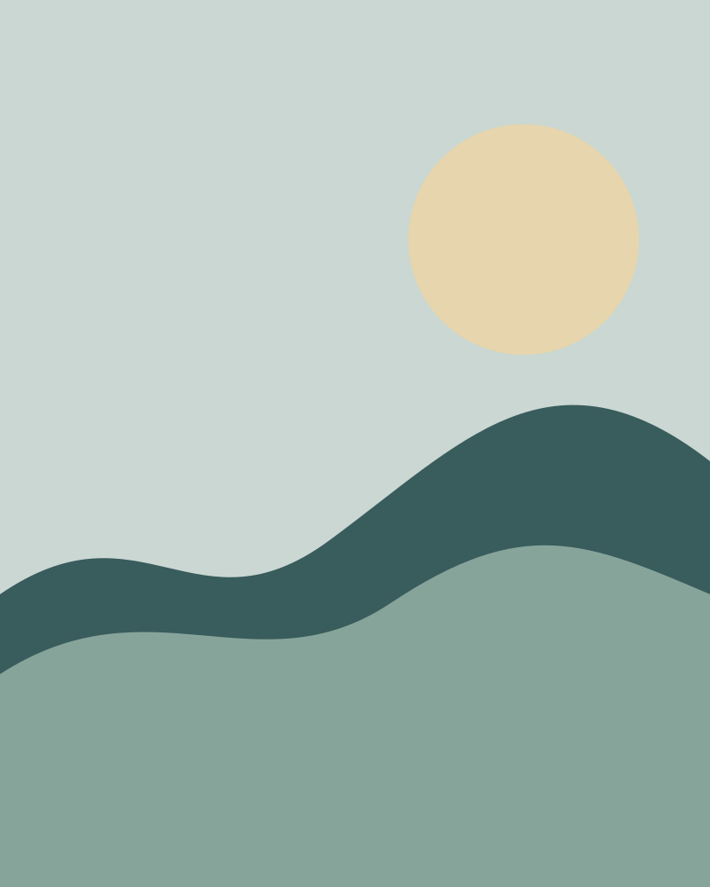
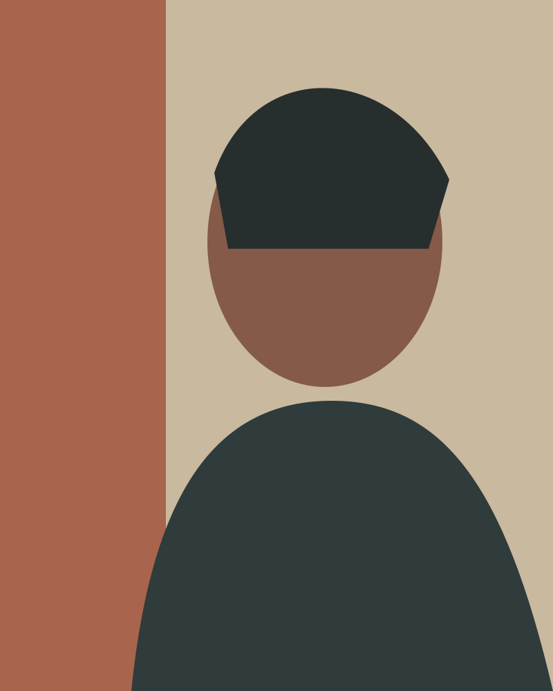

Contemporary visual artist · New Delhi
RAUSHNI
KUMARI
Exploring emotion, nature and human stories through art.

Stillness After Rain — 2026Selected work
Featured works

The artist
A practice shaped by attention.
Raushni Kumari is a contemporary visual artist whose work lingers on the exchanges between landscape, memory and inner life. Each piece begins with observation, then makes room for instinct.
Discover the journey ↗In series
Featured collections
From the studio